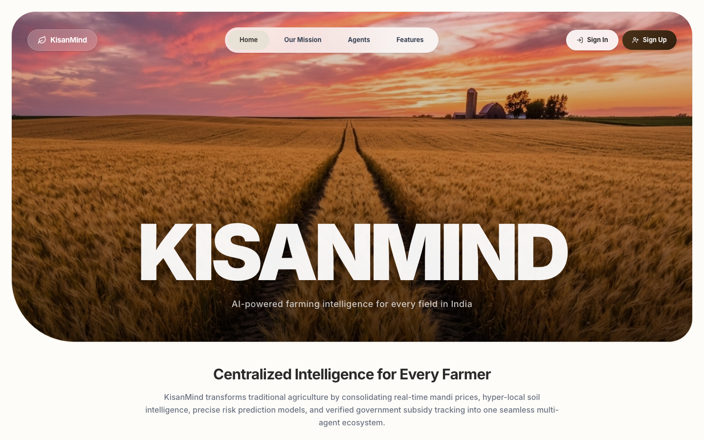
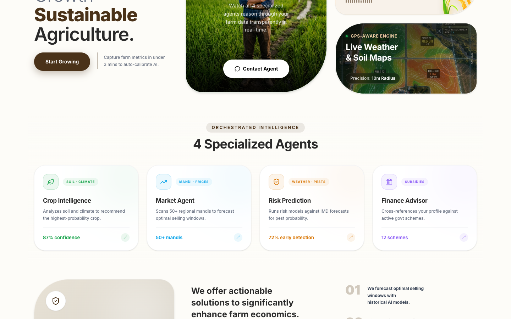

Work · 04
KisanMind
Four LangGraph agents for Indian farmers, with Hindi and Marathi voice, built in 24 hours.


Measured
| Metric | Value | Window | Source |
|---|---|---|---|
| Placing, of about 40 teams | Top 2 | Apr 2026 | HackWarts by Alta School of Technology |
| Languages, Hindi and Marathi voice | 2 | Groq Whisper STT, Sarvam AI TTS |
Problem
A farmer deciding what to plant needs four things at once: which crop suits the soil and season, what the mandi is paying against MSP today, which government scheme applies, and one plain-language risk summary. Each lives in a different place and none of them speak Hindi or Marathi.
What I built
The Next.js frontend, and the wiring that streams live output from four LangGraph agents into the UI: crop recommendation, mandi prices versus MSP, scheme matching, and a unified risk report. Voice in and out through Groq Whisper and Sarvam AI, so the whole flow works spoken.
Result
Top 2 of about 40 teams at HackWarts, shipped in 24 hours on zero sleep with the regular crew.
Learned: Voice in the farmer's own language was the feature judges remembered. Reach is a feature.